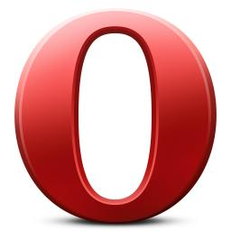

Google Chrome ，又称Google浏览器，是一个由Google（谷歌）公司开发的网页浏览器。
Mozilla Firefox ，中文名通常称为“火狐”或“火狐浏览器”，是一个开源浏览器。
Safari ,是苹果计算机的最新操作系统Mac Os X 中的浏览器。
Opera浏览器 ，是一款挪威Opera Software ASA公司制作的支持多页面标签式浏览的网络浏览器。
Internet Explorer ，简称 IE ，是微软公司推出的一款网页浏览器。